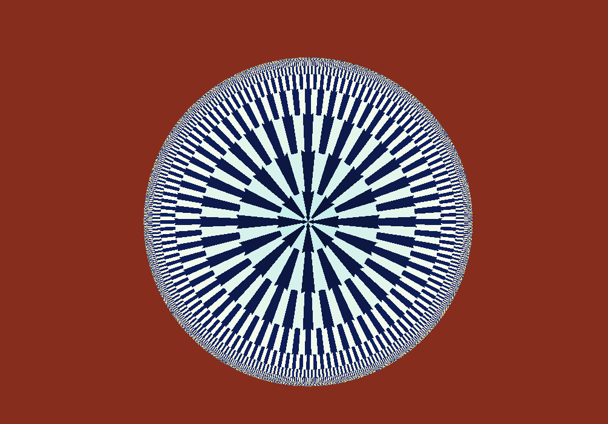

Convergence gallery
Fixed Point z2
The square map stripped down to pure convergence.
\(z_{n+1}=z_n^2\)
This page removes the parameter \(c\) from the Mandelbrot story and simply repeats \(z\mapsto z^2\). The result is a clean lesson in attraction, escape, and fixed points.

What to try first
Choose a point inside the unit circle. Repeated squaring pulls it toward zero.
Choose a point outside the unit circle. Its magnitude grows instead.
Use orbit display on the unit circle, where rotation and doubling of angles become visible.
Mathematical notes
Fixed points and the unit circle
wxChaos iterates \(z_{n+1}=z_n^2\). The fixed points solve \(z=z^2\), so \(z=0\) and \(z=1\). Points with \(|z|<1\) move toward \(0\), while points with \(|z|>1\) grow. The unit circle is the delicate boundary between those behaviors.